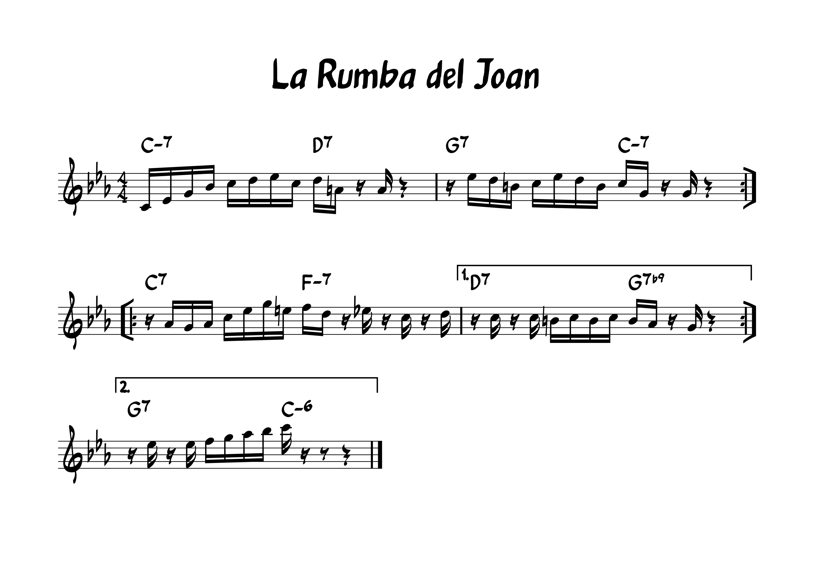
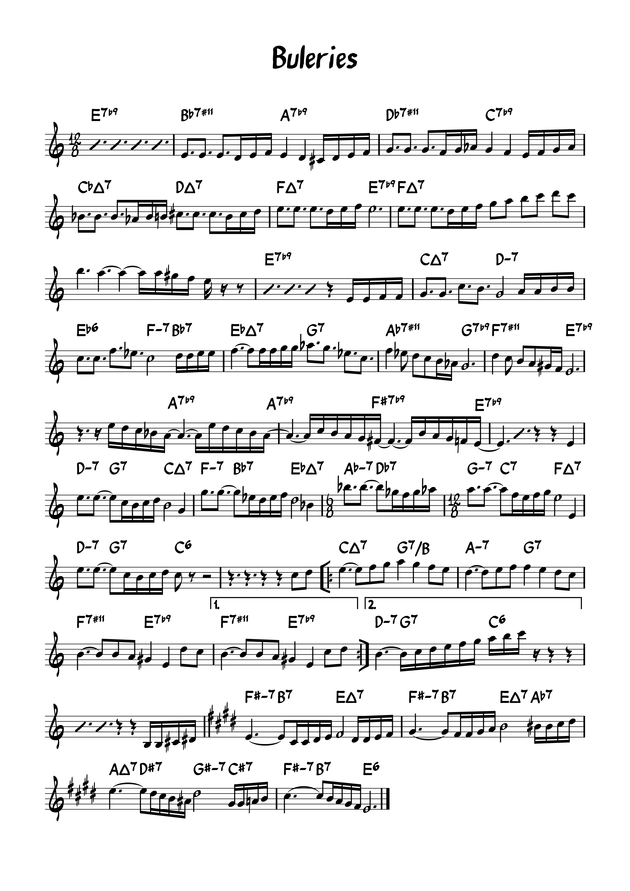

Partitures
Inici
Enregistraments
Partitures
Galeria

Adaptació de l'Armando's Rhumba canviant la forma, la melodia i l'harmonia
Adaptació del Giant Steps canviant la melodia i els II/V/I per la cadença flamenca
Adaptació del Lush Live canviant la melodia i alguns acords

Música original
 Adaptació del Giant Steps canviant la melodia i els II/V/I per la cadença flamenca
Adaptació del Giant Steps canviant la melodia i els II/V/I per la cadença flamenca
 Adaptació del Lush Live canviant la melodia i alguns acords
Adaptació del Lush Live canviant la melodia i alguns acords